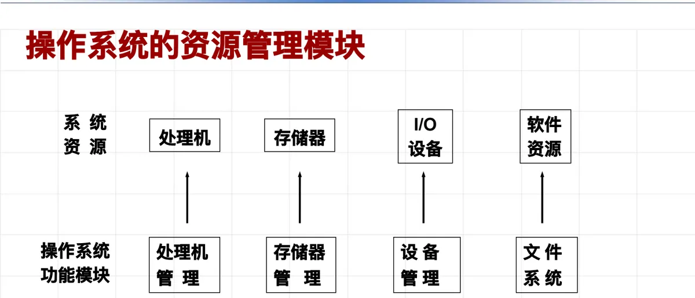

操作系统原理 · 第 1 章 绪论
1.5 操作系统的资源管理功能
上一节说操作系统是「整个计算机系统的核心」，这一节就把这个核心拆开看：它到底管哪些资源、每一类资源上要解决什么问题。四大功能模块——处理机管理、存储器管理、设备管理、文件系统——构成了操作系统的主体，本节逐个说明它们的职责，最后收拢成操作系统必须解决的四个基本问题。
1. 主要功能：资源管理与并发活动控制
操作系统的主要功能可以概括为一句话：控制和协调并发活动。并发的程序在活动过程中会动态地申请和释放系统公共资源，比如处理器 CPU、主存、各种输入/输出设备；谁来申请、什么时候给、给多少、用完怎么收回，都需要一个统一的管理者。
由此得到操作系统的两大支柱：系统资源管理和并发活动控制（即进程管理）。这两部分是互相联系、不可分割的——资源是并发的程序在争用，并发又是围绕资源展开的。也正因为如此，操作系统资源管理的目标和操作系统的宗旨完全一致：提高系统资源的利用率，方便用户使用。
按管理对象划分，资源管理分成四个模块：处理机管理、存储器管理、设备管理和文件系统（信息管理），它们各自与底层的处理机、存储器、I/O 设备和磁盘打交道。

2. 处理机管理
处理机是最宝贵的资源，处理机管理要回答三个层层递进的问题：
- 提出进程调度策略：多个进程竞争一个 CPU 时，决定先运行哪个进程、它占用多长时间、如何让出 CPU；
- 给出进程调度算法：把策略落实为可执行的算法，具体算出该选谁、选多久；
- 进行处理机的分派：在调度时机到来时，真正把处理机交给选中的进程。
策略、算法、分派三者次序不能颠倒：先定「按什么原则选」，再定「怎么算」，最后才是「动手交出去」。第 6 章「处理机调度」会把这些算法逐一摊开。
3. 存储器管理
多个程序在系统中运行，程序的指令和数据都要占用和分配内存，存储器管理要解决三件事：
- 存储分配和存储无关性：程序无法预知自己在主存中的位置及所占区域的大小，而且程序也希望无需关心存储细节。因此系统负责分配，并让程序与具体存储位置无关；
- 存储保护：程序只能访问自己的存储空间，彼此隔离；当它企图访问非法信息时，系统能够捕获这种越界行为；
- 存储扩充：系统提供虚拟存储技术，扩大逻辑主存——程序看到的空间可以大于实际物理内存。
这三件事与 1.4 节讲过的「扩展硬件的功能」正好互相印证：虚拟存储就是操作系统在裸机上造出来的新能力。第 7 章「主存管理」讲的就是这些机制。
4. 设备管理
设备管理的出发点是让用户不必和具体的硬件型号纠缠，它也有三个方面的职责：
- 设备无关性：用户向系统申请和使用的设备与实际操作的设备无关，以达到方便用户、提高设备利用率的目的；
- 设备分配：操作系统为各应用程序和运行实体分配各种设备。设备分配通常采用三种基本技术——独享、共享及虚拟技术；
- 设备的传输控制：包括启动设备、中断处理、结束处理三个方面。
这三条合起来回答的是「谁用哪台设备、用的时候数据怎么进出」。第 8 章「设备管理」会展开设备分配与缓冲、控制等细节。
5. 信息管理（文件系统）
信息管理又叫文件系统，它为用户提供一种简便的、统一的存取和管理信息的方法，并解决信息的共享、数据的存取控制和保密等问题。它要处理的具体内容包括：
- 信息的组织方式；
- 存取方法；
- 文件共享；
- 文件安全；
- 文件完整性；
- 磁盘空间分配。
从这张清单可以看出，文件系统一手托两家：既要让用户方便地存取名下的信息（组织与存取方法），又要保证信息不被不该看的人看到、不被意外损坏（安全、完整、共享控制）。第 9 章「文件系统」将逐项展开。
6. 操作系统应解决的基本问题
把四大功能模块的职责再抽象一层，操作系统面对的基本问题可以归为四条：
- 资源分配的策略和方法：资源有限而需求并发，按什么策略、用什么方法分配；
- 协调并发活动的关系：并发的活动之间既可能争用资源，也可能需要相互配合；
- 保证数据的一致性：并发访问之下，数据不能出现互相矛盾的中间状态；
- 实现数据存取控制（权限管理）：谁可以访问哪些数据、以什么方式访问，必须受控。
这四条是全课的纲：第 4 章的进程管理对应「协调并发活动」，第 5 章的分配机制与策略、死锁处理对应「资源分配的策略和方法」，第 7、8、9 章则分别把主存、设备、文件这三类资源的分配、保护与一致性问题讲到底。
本节小结
- 操作系统的主要功能是控制和协调并发活动；并发的程序动态申请与释放系统公共资源（CPU、主存、I/O 设备），因此「资源管理」与「并发活动控制（进程管理）」是互相联系、不可分割的核心功能；
- 资源管理分四个模块：处理机管理、存储器管理、设备管理、文件系统（信息管理）；资源管理的目标与操作系统宗旨一致——提高资源利用率、方便用户使用；
- 处理机管理三步走：提出进程调度策略（先运行哪个进程、占用多长时间、如何让出 CPU）→ 给出进程调度算法 → 在调度时机到来时进行处理机分派；
- 存储器管理三件事：存储分配与存储无关性、存储保护（隔离并捕获越界访问）、存储扩充（虚拟存储技术扩大逻辑主存）；
- 设备管理三方面：设备无关性、设备分配（独享、共享、虚拟三种基本技术）、设备的传输控制（启动设备、中断处理、结束处理）；
- 文件系统提供简便统一的存取和管理信息的方法，解决共享、存取控制与保密问题，涉及信息组织、存取方法、文件共享、文件安全、文件完整性、磁盘空间分配；
- 操作系统应解决的四个基本问题：资源分配的策略和方法、协调并发活动的关系、保证数据的一致性、实现数据存取控制（权限管理）。